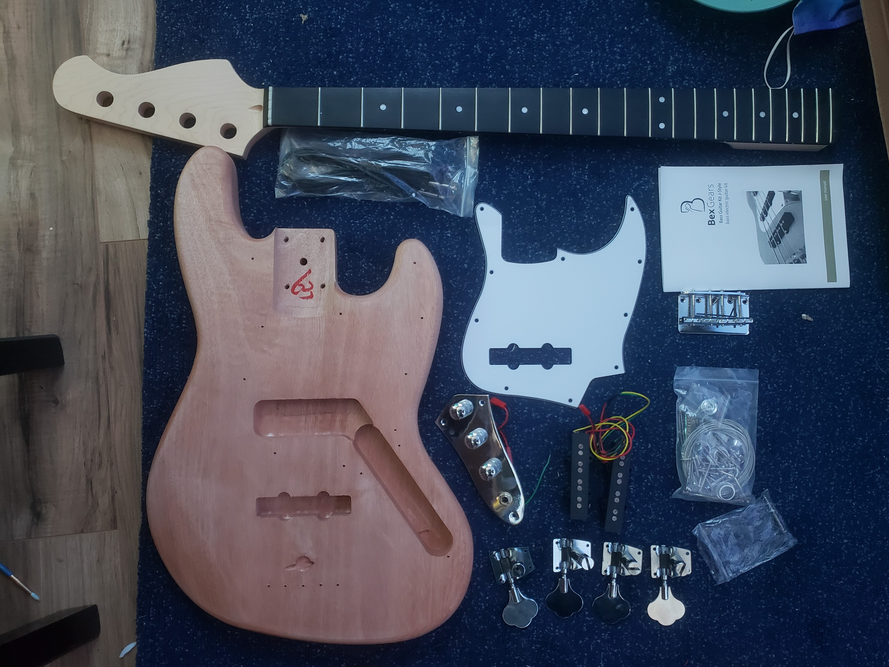
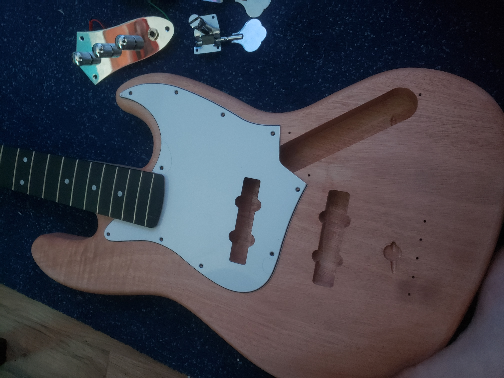
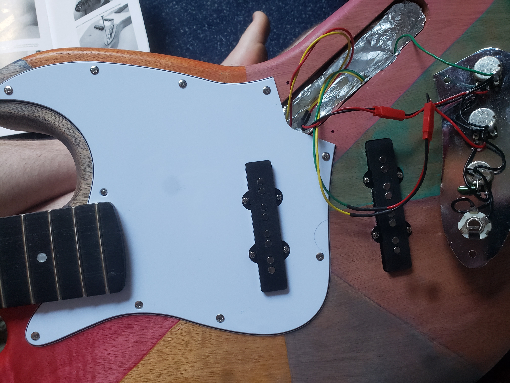
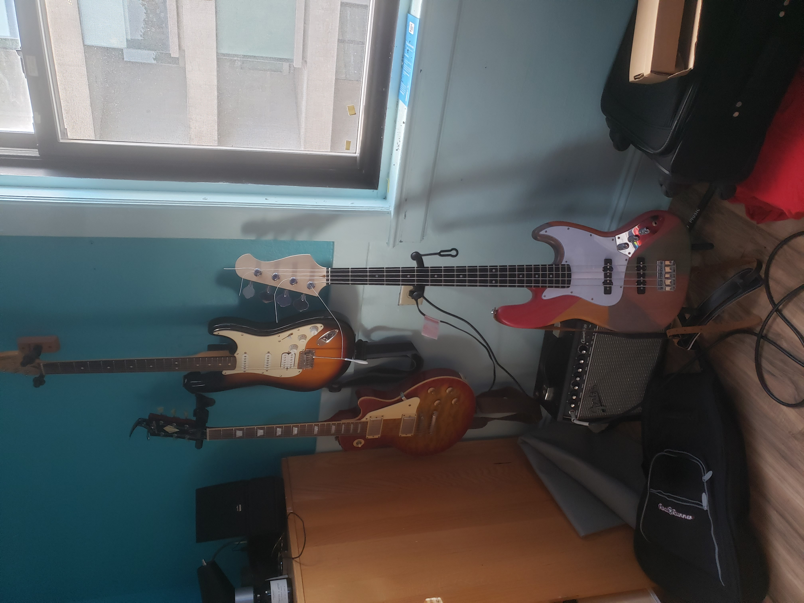
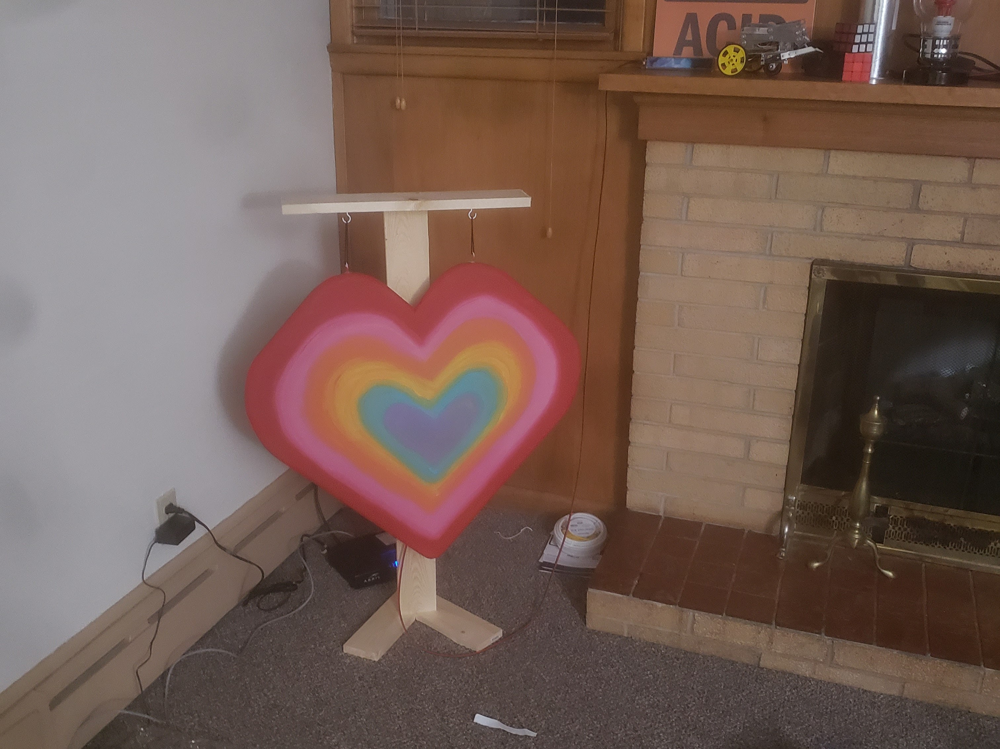
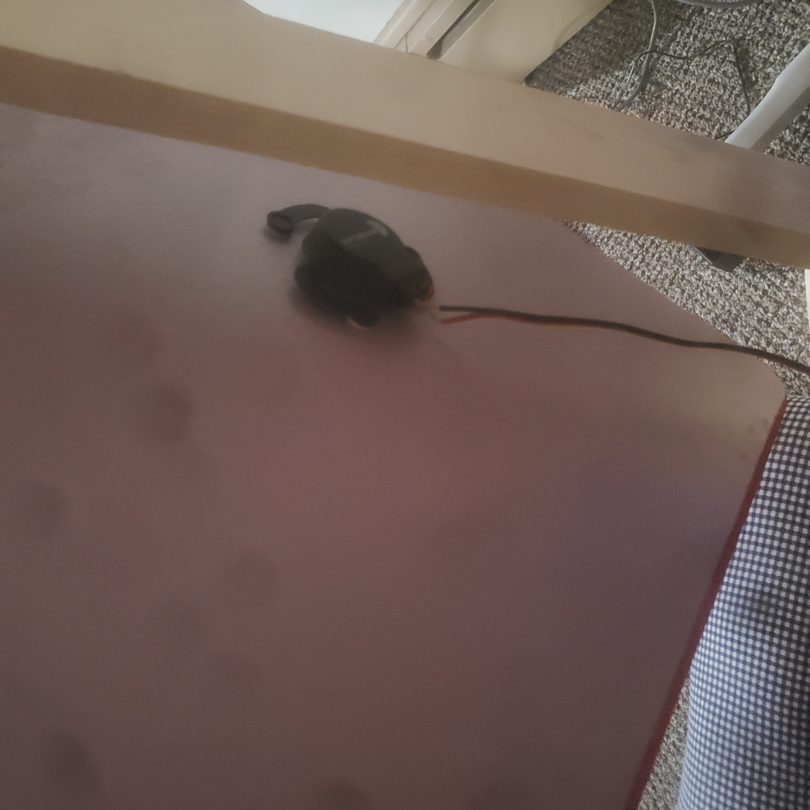
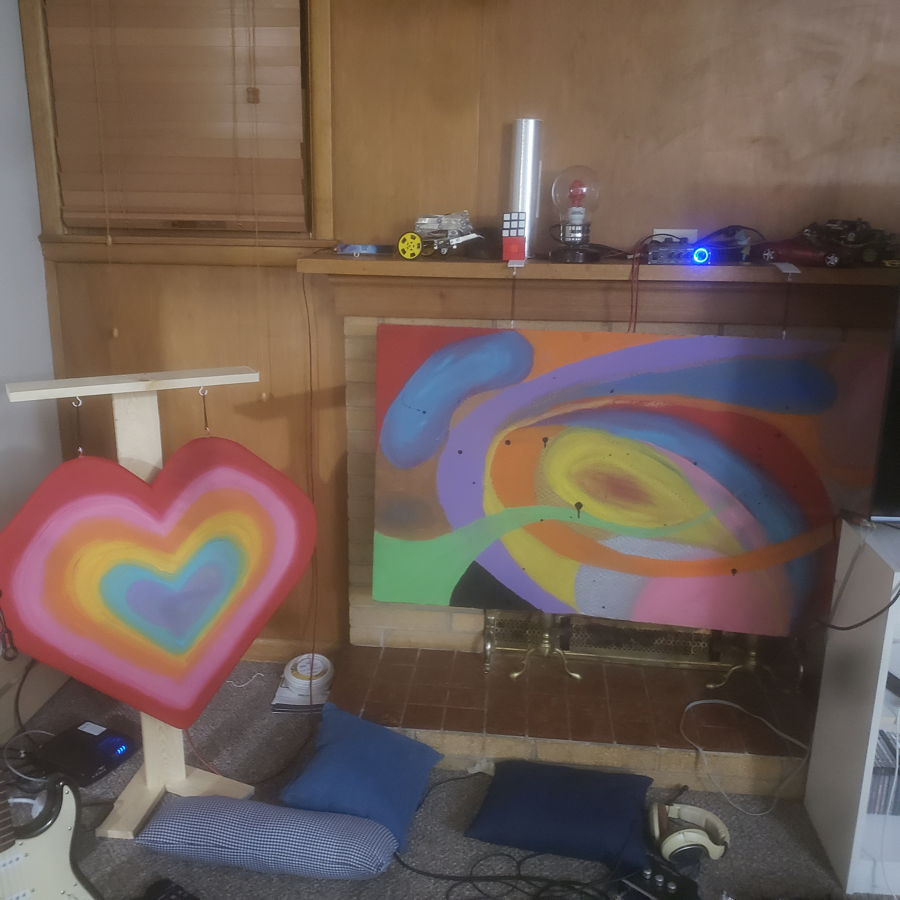

Jrew's Projects
Project 1) Building an Electric Bass
October 2021
After being a guitarist for 3 years, I'd decided that I wanted to try my hands at building a guitar.
I also wanted to pick up bass as my second instrument, so I figured that it would be a great idea to combine those two ideas together and build my own bass!
I bought a bass kit on amazon which included the body, neck, and all neccesary hardware for me to make a bass.
This was both the cheapest way for me to get a bass and allowed me to practice soldering, setting up instruments, and make a cool art project.

After checking that all of the pieces were in the kit I put all of the pieces on in a test fit to make sure I wouldn't have to shave off any pieces of wood or pickguard.

Once the neck was put on, I took a straight edge to either side of the neck and drew lines to make sure that the bridge would be alligned and that the strings would sit in the middle of the fretboard.
I also measured 17 inches from the 12th fret and made sure that the middle of the bridge laid at that point.
The reasoning behind this is that the strings on a jazz bass should be about 34 inches long, and the 12th fret should be exactly in the middle.

The strings never actually end up being 34 inches long, since the variance in tension and thickness require the lower frequency strings to be longer than the higher frequency strings.
After all of that, I took the bass back apart to paint it and seal it so that it looked better than plain wood and protected it from the elements.
Once I got it all back together I resoldered the potentiometers so that it would have a master volume, master tone and blend knob, as opposed to standard jazz bass wiring which is neck volume, bridge volume, and tone.

The above image shows the wiring before I switched it around.
Once it was finally done I had a bass That i could play and learn on.
It ended up being my main bass for the next several years and I've played over a dozen shows with it.

Project 2) Homemade speakers
September 2022
During college I'd learned about exciters which allow you to turn any surface into a speaker.
So I went into a bit of youtube binging streak as I am often want to do.
After hearing a few audio samples I'd decided that I liked the sound of pink panther foam insulation the best.
Larger panels sound better, but there was going to be the issue of getting them from home depot to my house, so I ended up going with smaller panels that wouldn't get as bassy as the larger panels.
Since I was already making audio sacrifices from size, I figured I may as well paint the panel and turn it into something interesting to look at, so I cut it into a heart shape and emphasized the shape with some cute paint.
I wanted to suspend the panel to reduce the amount of points of contact that would dampen the high frequency content of the speaker, and so I built a quick stand out of wood and used some old mardi gras beads to hang it from.
The exciter was attached a bit off center of the panel and the whole assembly was put in my living room.


At this point I had the main speakers built and hooked up to a cheap amp, but I was missing anything below about 100hz and needed a subwoofer.
I looked around my apartment to see if I had any hard, light materials lying around, and to my suprise I found a hex centered cardboard from my TV.
I repeaeted the above proces and tried it out and... it worked, but if I turned it up too loud then I got some weird resonances that I have to assume was from some paper coming unglued inside the comb.4
Not great, but it was a start. Once I put it in the center of my living room, I got a bit of a suprise.
Because the cardboard was resting against a non-functioning fireplace, that cavity was acting as an amplifier, making the speaker louder at lower input levels.
Finally I could get rid of the weird resonances while keeping the low frequencies at a decent volume.

Project 3) Analog Modular synth
I wanted a modular synth, and I wanted an electronics project to keep my skills sharp.
So I started looking into different schematics to build and found this wonderful youtube series by Moritz Klein.
I've taken his schematics and lightly adjusted them to add some extra goodies.